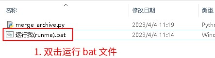
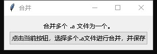

4.1.5. How to Merge .a Files
.a files are static library files. An .a file is an archive that contains a number of .o files.
.a files are usually generated with the ar program.
Note
Note that ar is a generic name: the actual program name may differ for different chips and usually carries a prefix. In the Jieli toolchain, ar is located at C:\JL\pi32\bin\llvm-ar.exe.
The ar program can create or extract .a files. To merge two or more .a files, you generally first extract each .a file into .o files and then use the ar program again to pack them into a new .a file.
You can use the merge script (click here to download) we provide.
4.1.5.1. Usage
Install the python3 (click here to download) environment. Make sure to add python to PATH:

Extract the downloaded merge script, as shown below:

The window is shown below. Simply click the buttons to select the files:

Note
To merge from the command line, use the following command:
The command python3 merge_archive.py input1.a input2.a input3.a --output new.a merges input1.a, input2.a and input3.a into new.a